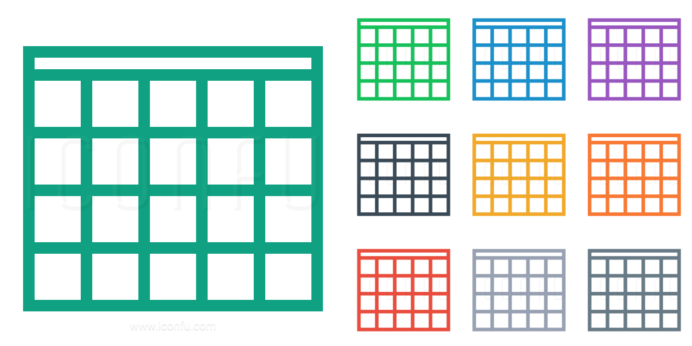

24 года, живу в Иркутске (МСК +5). Не готов к переезду.
Обучаюсь на первом курсе аспирантуры ИДСТУ СО РАН. Работаю в молодежной лаборатории "ИИ и анализа данных", занимаюсь разработкой систем автоматической аннотации табличных данных с использованием LLM.
Один из создателей фреймворка RuTaBERT, разработанного для решения задачи семантической интерпретации русскоязычных таблиц.
Создатель датасета русскоязычных таблиц, размеченных для решения задачи CTA (Column Type Annotation) RWT-RuTaBERT, основанного на корпусе русскоязычных таблиц из Википедии Russian Web Tables.
Умею работать в команде и устанавливать хорошие рабочие отношения с коллегами.
Профессиональные интересы: DL, NLP, LLMs, Big Data.
Telegram: @kirilltobola
Email: hello@ktobola.ru
GitHub: kirilltobola
Работаю в молодежной лаборатории "ИИ и анализа данных", занимаюсь разработкой разработкой систем автоматической аннотации табличных данных с использованием LLM.
Создатель фреймворка RuTaBERT, предназначенного для решения задачи семантической интерпретации русскоязычных таблиц.
RuTaBERT - фреймворк для изучения глубоких контекстуальных представлений столбцов русскоязычных таблиц с включением локального контекста всей таблицы для решения задачи семантического аннотирования столбцов.
С помощью данного фрейморвка появляется возможность получения семантического понимания структуры таблиц, которое в свою очередь может быть очень полезным для решения целого спектра различных задач:
Обученная модель достигает впечатляющих значений метрики F1 (микро = 0.96, макро = 0.90) на тестовой выборке.
Доклад по данному фреймворку был представлен на конференции "Иванниковские чтения", май 2024, Великий Новгород.
Статья "Semantic Annotation of Russian-Language Tables Based on a Pre-Trained Language Model" принята к публикации в издании IEEE Xplore.
Разработал датасет русскоязычных таблиц для решения задачи CTA (Column Type Annotation) RWT-RuTaBERT, основанный на корпусе русскоязычных таблиц из Википедии Russian Web Tables.
Из исходного набора Russian Web Tables были отобраны только таблицы, имеющие структуру вертикальных столбцов. Также столбцы были очищены и размечены 170 семантическими типами из графа знаний DBpedia. В результате чего был получен датасет, состоящий из 1 441 349 столбцов.
Применяемые навыки:
Git, Python, SQL, ML, NLP, Pandas, Анализ данных, Seaborn, PySpark
Работал в управлении внутреннего аудита на позиции DS. В ежедневные обязанности входила выгрузка данных с помощью HUE / PySpark с последующей обработкой и визуализацией.
Принимал участие в разработке инструмента для кластеризации отзывов сотрудников.
Команда аудиторов в подготовках к проверкам для определения проблем в продуктах проверяемого подразделения просматривала отзывы пользователей, используемые для расчёта CSI (Customer satisfactoin index), и выделяла кластеры проблем вручную.
Для автоматического выделения кластеров проблем использовались эмбеддинги предобученной языковой модели (BERT), на которых запускался DBSCAN.
Разработанный инструмент позволил существенно сократить ручной труд.
Участвовал в разработке парсера внутреннего HR-портала / справочника.
Команде аудиторов в каждой проверке было необходимо собирать данные о целях руководителей, а также об их подчиненных. Они делали это в ручную, собирали цели с внутреннего HR-портала, а информацию о подчиненных из справочника.
Для автоматизации этих процессов был разработан инструмент на языке Python с использованием библиотеки Selenium.
Участвовал в развитии сообщества NTA:
Применяемые навыки:
Git, Python, SQL, ML, NLP, Pandas, Анализ данных, Seaborn, PySpark
Работал на позиции backend-разработчика в digital агентстве, занимающимся заказной разработкой интернет магазинов, порталов.
В повседневные задачи входило исправление багов, написание новой функциональности для сайтов заказчиков.
Применяемые навыки:
Git, PHP, Laravel, Bitrix, SQL, Postman.
Фундаментальная информатика и информационные технологии
Фундаментальная информатика и информационные технологии
Анализ данных научных исследований и машинное обучение
RuTaBERT - фреймворк для изучения глубоких контекстуальных представлений столбцов русскоязычных таблиц с включением локального контекста всей таблицы для решения задачи семантического аннотирования столбцов.
Обученная модель достигает впечатляющих значений метрики F1 (микро = 0.96, макро = 0.90) на тестовой выборке.
Датасет русскоязычных таблиц для решения задачи CTA (Column Type Annotation) RWT-RuTaBERT, основанный на корпусе русскоязычных таблиц из Википедии Russian Web Tables.
Датасет содержит 1 441 349 столбцов, размеченных 170 семнтическими типами.
